מילה ההופכת לעצמה גם בקריאה מהסוף להתחלה וגם בשיקוף מראה אופקי.
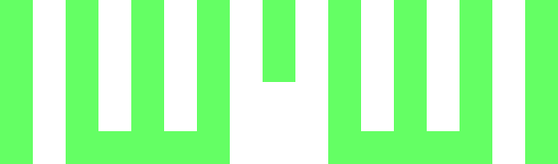
מילה אחת ההופכת לשנייה גם בקריאה מהסוף להתחלה וגם בשיקוף מראה אופקי.
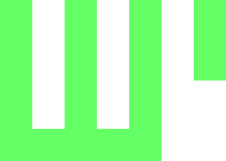
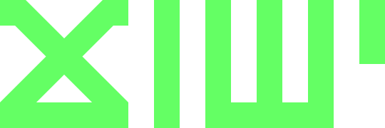
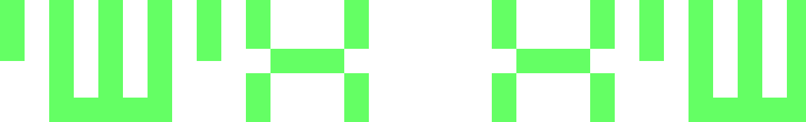
מילה ההופכת לעצמה בשיקוף מראה אופקי (אך לא בקריאה מהסוף להתחלה).
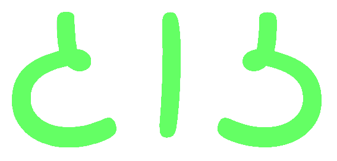
מבוסס על גופן Playpen Sans Hebrew.
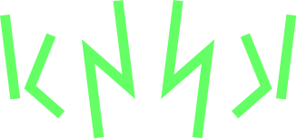
מילה אחת ההופכת לשנייה בשיקוף מראה אופקי (אך לא בקריאה מהסוף להתחלה).
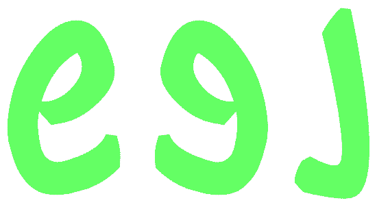
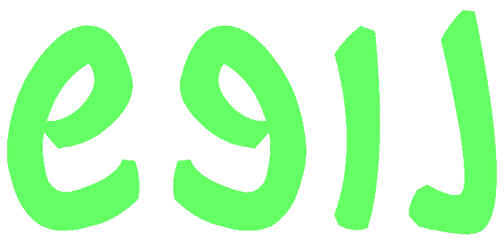
מבוססים על גופן Guttman Yad Brush.
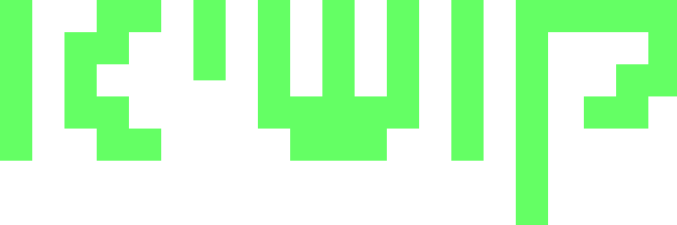
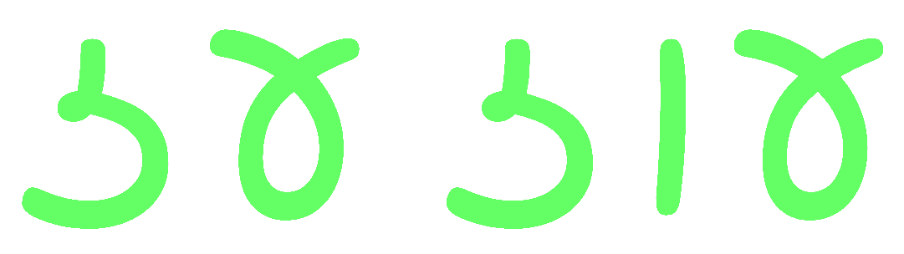
מבוסס על גופן Playpen Sans Hebrew. לזכרו של עוז קרת־דובב. למדתי בדיעבד כי נעם דובב חיבר בשעתו את הפלינדרום: "עוז, עז הזעזוע".
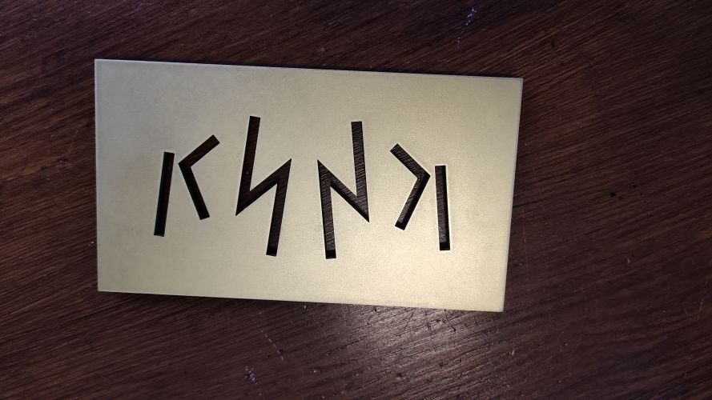
מוקדש לעלמא - בית לתרבות עברית, אשר במסגרת תוכנית העמיתים תשפ"ו נוצרו העבודות בעמוד זה.
John McClellan, A note on catoptrons, Word Ways 4(2) (1971).
Jim Puder, Oiliqo, the looking-glass crab, Word Ways 36(4) (2003).
Graphéine, The smart set of ambigrams, graphic symmetry and word reflections.
John Langdon, Ambigrams, logos and word art.
Yochay Orlan, קסם הפוך.